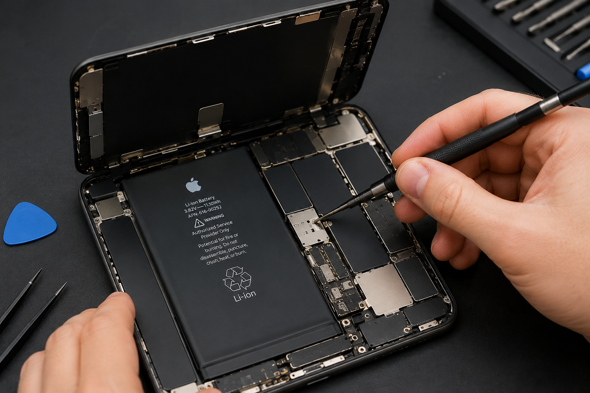

Display • Akku • Face ID • Kamera • Ladebuchse • Mainboard • Wasserschäden
Schnelle und professionelle Reparaturen mit hochwertigen Ersatzteilen und Garantie.
Jetzt Termin vereinbarenWir reparieren alle iPhone Modelle – vom iPhone SE bis zum neuesten iPhone.
Schneller Austausch von gebrochenen oder defekten Displays mit hochwertigen Ersatzteilen.
Neuer Akku für längere Laufzeit und maximale Leistung Ihres iPhones.
Reparatur von Ladeproblemen sowie Austausch defekter Lightning-Anschlüsse.
Austausch oder Reparatur der Front- und Rückkamera mit Originalqualität.
Professionelle Diagnose und Reparatur des Face-ID-Systems.
Ultraschallreinigung, Diagnose und Mainboard-Reparatur nach Wasserschäden.
Reparierte Geräte
Zufriedene Kunden
Jahre Erfahrung
Schneller Service

Displaywechsel in kurzer Zeit.
Akkuwechsel mit Garantie.
Professionelle Reparatur.
Mainboard Diagnose & Reinigung.
Die meisten Display- und Akku-Reparaturen werden innerhalb von 30 bis 90 Minuten durchgeführt. Komplexe Mainboard-Reparaturen können länger dauern.
Ja. Wir verwenden ausschließlich hochwertige Ersatzteile und führen jede Reparatur sorgfältig durch.
In den meisten Fällen bleiben Ihre persönlichen Daten vollständig erhalten.
Ja. Auf unsere Reparaturen erhalten Sie selbstverständlich Garantie.
Sie benötigen eine iPhone Reparatur in Hannover? Kontaktieren Sie Limarsat noch heute.